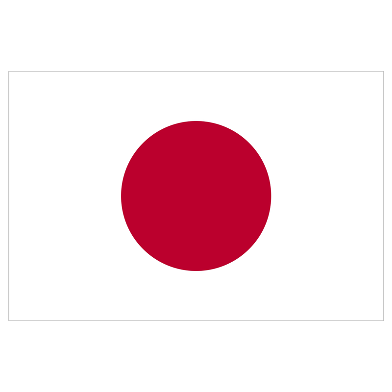
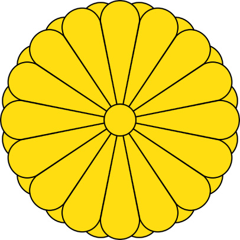

Японія є унітарною демократичною національною державою з парламентською конституційною монархією.
Її основний закон — Конституція 1947 року, ухвалено під тиском США після поразки країни в Другій світовій війні.
Він базується на недоторканності прав людини, принципах пацифізму та визнанні японської нації носієм державного суверенітету.
За Конституцією влада в Японії поділяється на три гілки — законодавчу, виконавчу і судову.
На фото зображені герб та прапор країни

